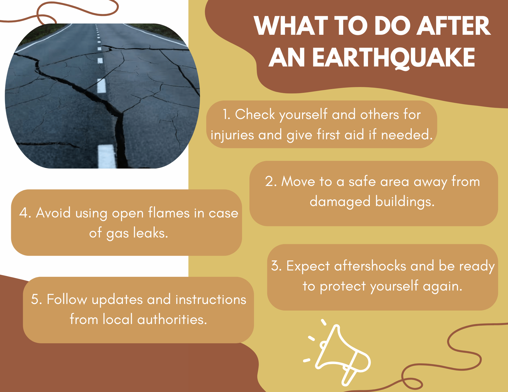

1. Participate in earthquake drills and take it seriously.
2. Make an emergency plan wherein you plan where to meet if you get seperated with your family.
3. Prepare an emergency Go Bag which includes food, water, flashlight, batteries and more.
4. Make sure to strengthen your house against earthquake.
5. Since no one knows when an earthquake will come, it is best to stay alert at all times.
1. Drop, cover, and hold on under a sturdy table or desk.
2. Stay indoors and keep away from windows and heavy objects. Meet if you get seperated with your family.
3. If outside, move to an open area away from buildings and trees.
4. Protect your head and neck from falling debris.
5. Do not use elevators during the shaking.

1. Check yourself and others for injuries and give first aid if needed.
2. Move to a safe area away from damaged buildings.
3. Expect aftershocks and be ready to protect yourself again.
4. Avoid using open flames in case of gas leaks.
5. Follow updates and instructions local authorities.